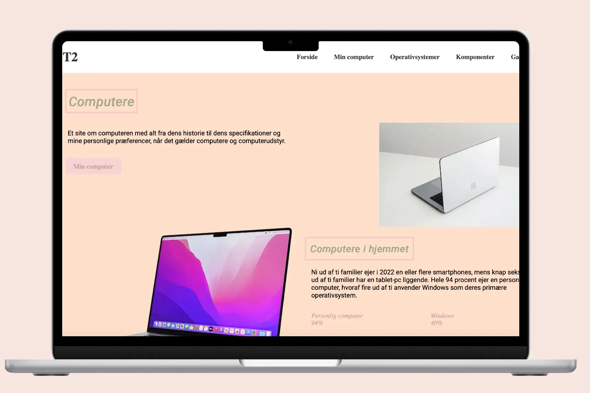

Grundlæggende web
Tema
I tema 2 blev jeg introduceret til det grundlæggende html og css. Jeg fik kendskab til de faglige begreber som brugergrænseflader, responsivt webdesign, wireframes og styletile. Jeg fik til opgave at udarbejde et site med fem html sider, på baggrund af de udleverede wireframes. Derudover var det et krav at sitet indholdte farver og to forskellige fonte. Afslutningsvis skulle jeg benytte mig at de id- og class-navne som fremgik i layoutdiagrammet.
Min læring
Studiestartsprøven var det første projekt, jeg arbejdede med på semesteret. Gennem dette projekt lærte jeg at udvikle et responsivt website, struktureret over fem HTML-sider. Jeg har opnået erfaring med at udføre research, arbejde med typografi og opbygge layouts ved hjælp af grids.
Derudover lærte jeg at aflæse og anvende de wireframes og layoutdiagrammer, jeg blev tildelt, som grundlag for udarbejdelsen af mit endelige site. Dette gav mig en grundlæggende forståelse for, hvordan man omsætter visuelle skitser til et webdesign.
Proces & løsning
Jeg begyndte min arbejdsprocess med at læse opgaveformuleringen for at skabe et overblik over opgaven. Der var en række specifikke krav, blandt andet i forhold til valg af fonte og farver. Vi havde som nævnt før fået udleveret wireframes og layoutdiagrammer, samt forudbestemte id- og class-navne, som jeg skulle tage udgangspunkt i, under udviklingen af mit site.
Klik på skærmen for at åbene min opgave
Jeg udarbejdede opgaven i overensstemmelse med opgavespecifikationerne og fulgte det udleverede layoutdiagram. I arbejdet anvendte jeg de tildelte id og class navne, hvilket gav mig en grundlæggende forståelse for strukturering af HTML og CSS. Jeg lærte at opbygge layout ved hjælp af grid og skabe et responsivt design, der tilpasser sig forskellige skærmstørrelser ved brug af media queries til både mobil og desktop.